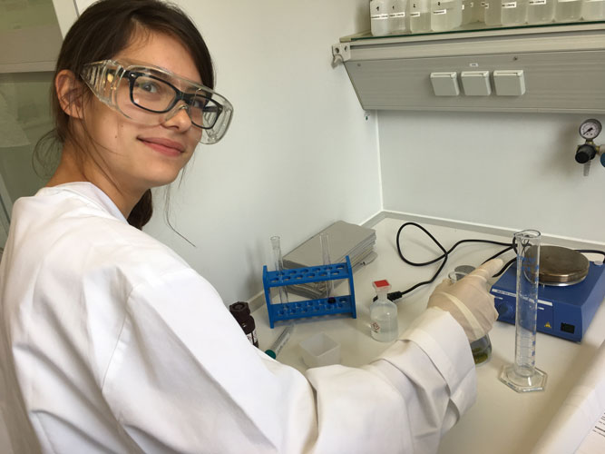
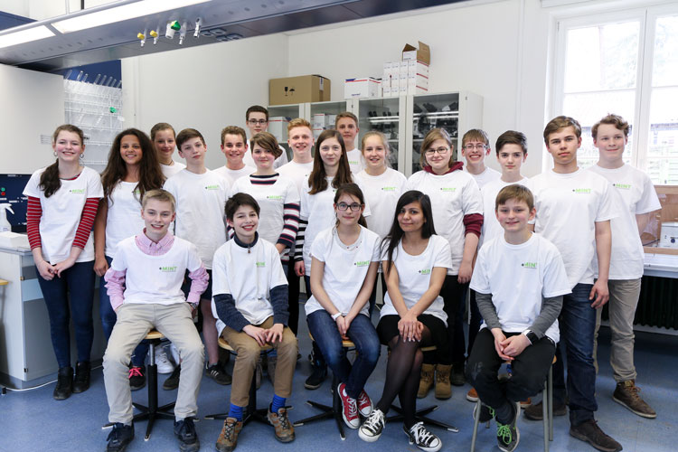
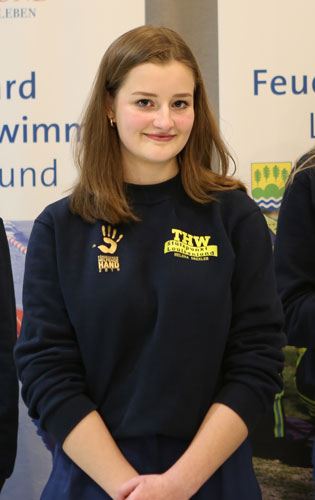
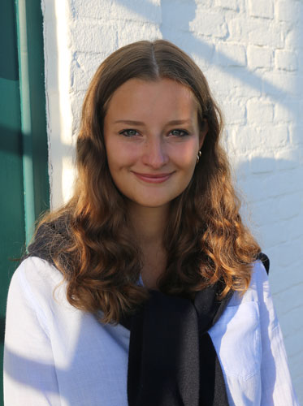
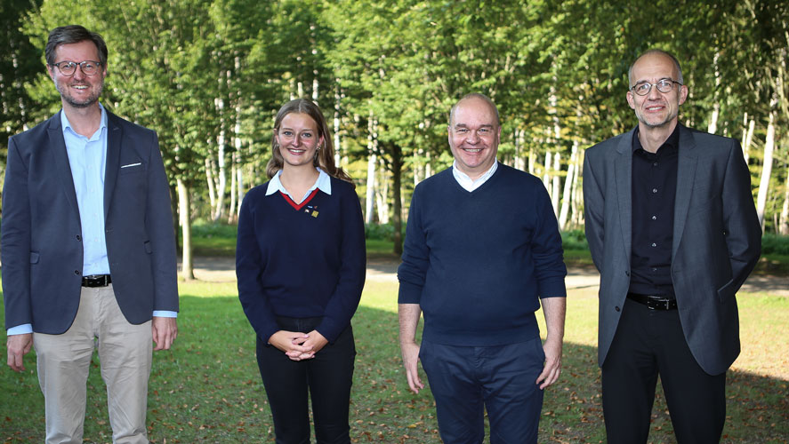
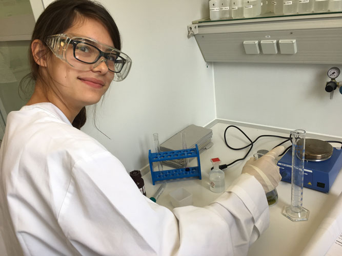
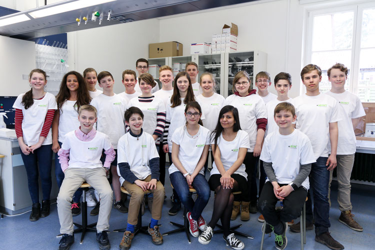
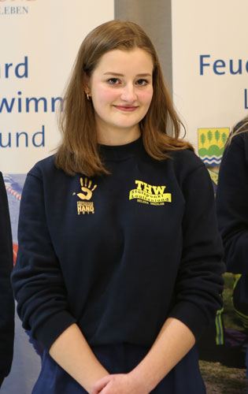
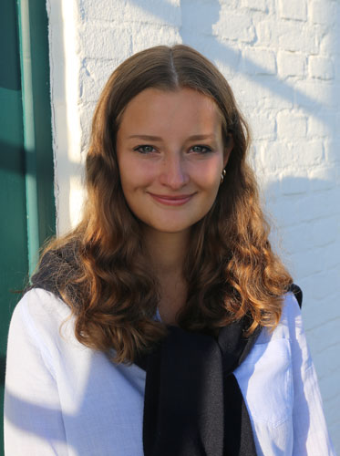
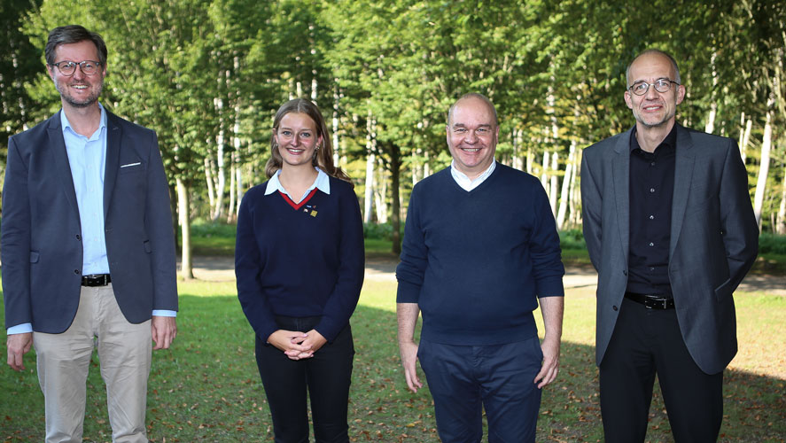

Helene Drexler: Als Stipendiatin in den Vorstand
Mit plus-MINT ist im Jahr 2015 ein bundesweit einzigartiges, integriertes Bildungsprogramm für künftige Leistungs- und Verantwortungsträger in unserer Gesellschaft geschaffen worden, das zur Stärkung des Wirtschafts- und Wissenschaftsstandorts Deutschland leisten und zur Persönlichkeitsentwicklung talentierter Schülerinnen und Schüler beitragen wird. Ein Jahr später starteten dann 15 Mädchen und Jungen das vierjährige plus-MINT Abenteuer in Louisenlund – allesamt Schülerinnen und Schüler, die sich durch Talent, Leistungsbereitschaft und Teamgeist auszeichneten. Im vergangenen Jahr hielten dann die ersten Absolventinnen und Absolventen ihr Abitur in den Hände
Helena Drexler gehört zur ersten plus-MINT Stipendiaten-Generation. Im Sommer 2020 absolvierte die junge Frau, die sich 2016 für das Talentförderprogramm beworben hatte, ihr Abitur in Louisenlund. Heute studiert sie Medizin und wurde zur Beisitzerin im Vorstand des Vereins zur plus-MINT Talentförderung gewählt.
Was sie über ihre Zeit in Louisenlund sagt und wie sie den Verein unterstützen möchte, das lest Ihr in unserem Blog.